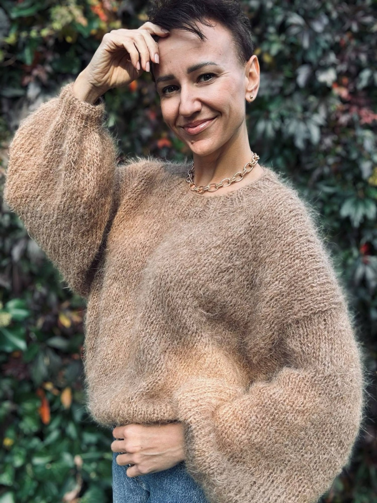
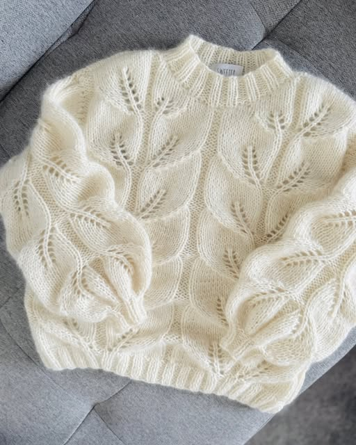
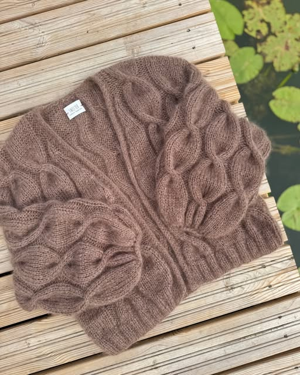
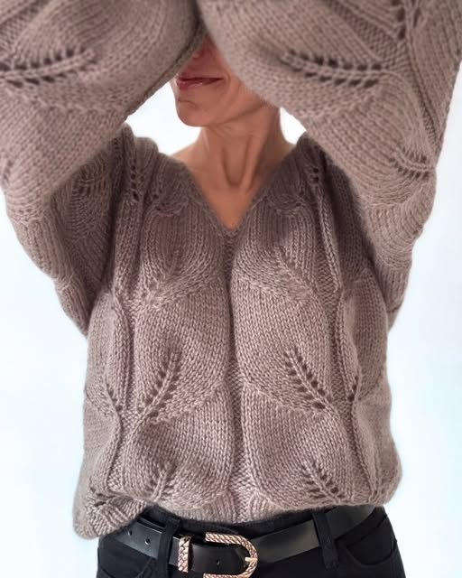

luxury handmade knitwear
Projektuję i dziergam swetry od 30 lat.
Sweeter to miłość do rękodzieła. Wyróżniający design. Najwyższa jakość. Perfekcja wykonania.


i dziergania
wysokiej jakości
na Instagramie
zakątek świata
kolekcja
Swetry, które otulają
Każdy sweter, który wychodzi spod moich rąk, jest unikalny i tworzony z myślą o konkretnej osobie. Dobieram fason, kolor, wykończenie, rodzaj włóczki i rozmiar tak, by idealnie pasował do właściciela.
Wszystko robię sama — od pierwszego oczka po ostatni szew — dlatego czas oczekiwania bywa dłuższy, ale w zamian każdy otrzymuje coś wyjątkowego. Stworzonego z sercem.
Część swetrów jest dostępna od ręki — zajrzyj do wyróżnionej relacji „Od ręki” na Instagramie.

materiały
Tylko szlachetne włókna
Pracuję wyłącznie na wysokiej jakości naturalnych włóczkach, tworząc w duchu slow fashion – z szacunkiem dla czasu, przyrody, materiału i człowieka.
sweter na zamówienie
Jak powstaje Twój sweter
-
01
Wybierz model
Wskaż projekt z kolekcji albo opisz sweter, o którym marzysz.
-
02
Kolor, skład, rozmiar
Razem dobieramy włóczkę, kolor i wymiary.
-
03
Dzierganie ręczne
Oczko po oczku. Każdy sweter wymaga czasu, serca i mnóstwa pracy — i właśnie to w nim czuć.
-
04
Wysyłka w świat
Starannie zapakowany sweter wyrusza do Ciebie — w Polsce i w każdym zakątku świata.
poznajmy się
Cześć, jestem Natalia
Dziergam od ósmego roku życia — to pasja, która towarzyszy mi od dziecka i z czasem stała się moim sposobem na życie.
Dziś prowadzę własną firmę i zajmuję się dzierganiem swetrów na zamówienie. To moje jedyne źródło utrzymania, ale też źródło ogromnej radości i satysfakcji.
Kocham to, co robię!
Wierzę, że w każdym splocie można poczuć ciepło dłoni i pasję, która sprawia, że zwykła włóczka zamienia się w coś naprawdę wyjątkowego.

pytania / zamówienia
Zamów swój wymarzony sweter
Cenę oraz przewidywany czas realizacji ustalimy indywidualnie, w zależności od wybranego modelu i szczegółów zamówienia.